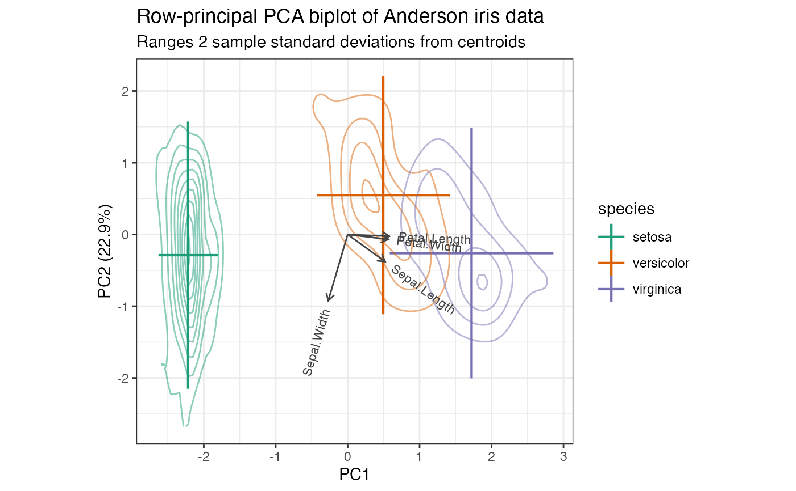

These key drawing functions supplement those built into ggplot2 for producing legends suitable to biplots.
Usage
draw_key_line(data, params, size)
draw_key_crosslines(data, params, size)
draw_key_crosspoint(data, params, size)Details
draw_key_line() is a horizontal counterpart to ggplot2::draw_key_vline().
draw_key_crosslines() superimposes these two keys, and
draw_key_crosspoint() additionally superimposes an oversized
ggplot2::draw_key_point().
See also
ggplot2::draw_key for key glyphs installed with ggplot2.
Examples
# scaled PCA of Anderson iris data with ranges and confidence intervals
iris[, -5] %>%
prcomp(scale = TRUE) %>%
as_tbl_ord() %>%
confer_inertia(1) %>%
augment_ord() %>%
mutate_rows(species = iris$Species) %>%
ggbiplot(aes(color = species)) +
theme_bw() +
scale_color_brewer(type = "qual", palette = 2) +
geom_rows_lineranges(fun.data = mean_sdl, linewidth = .75) +
geom_rows_density_2d(contour = TRUE, alpha = .5) +
geom_cols_vector(aes(label = name), color = "#444444", size = 3) +
ggtitle(
"Row-principal PCA biplot of Anderson iris data",
"Ranges 2 sample standard deviations from centroids"
)
#> Warning: Duplicated aesthetics after name standardisation: contour
